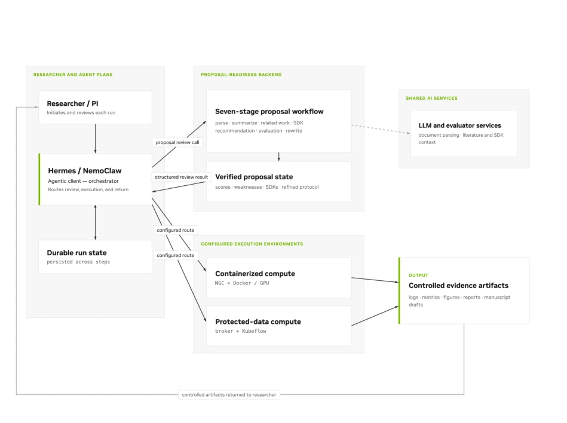
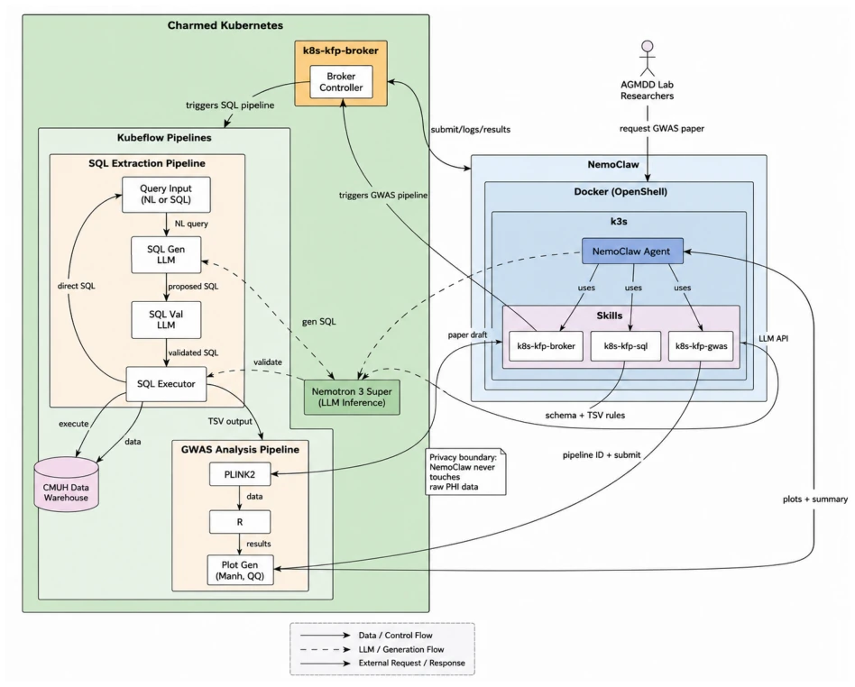
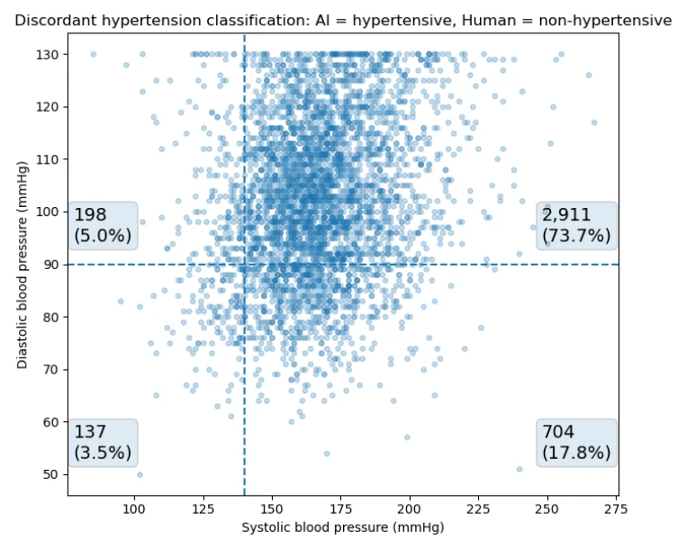
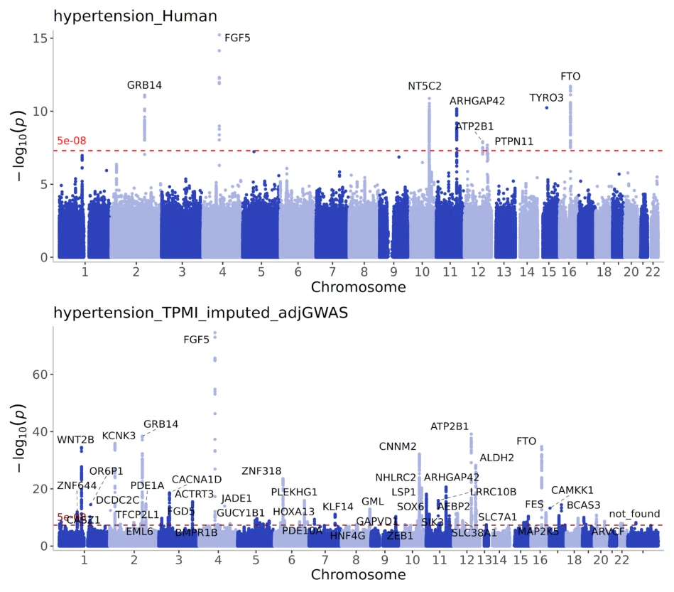
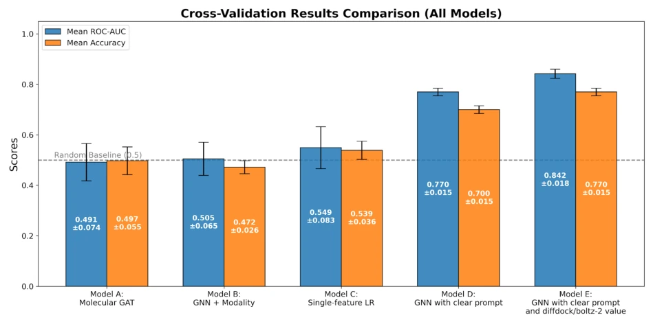

NVAITC AI Scientist: A Governed End-to-End Research System -- A Hypertension GWAS Case Study
Eddie Huang, Ken Liao, Iven Fu, Yang-Hsien Lin, Chao-Shun Zhan, Andy Liao abspdf
论文点评Review
这篇论文把“人工智能科学家”的帽子扣得挺大，但仔细一看，其实是给 PLINK2 和 Kubeflow 穿了件带护栏的 AI 外衣。NVAITC AI Scientist (NAIS) 的核心创新不在于模型多聪明，而在于“管得严”。它承认了 AI 在受保护医疗数据面前的局限性，用“代理 - 经纪人”架构把 PHI 数据锁死在内部，只允许返回聚合结果。虽然复现了高血压 GWAS 的已知位点（FGF5 等），但这更像是“自动化流水线”而非“科学发现”。最大的槽点是：人类专家定义的表型才是最终真理，AI 只是负责写 SQL 和跑代码的“高级实习生”，一旦表型定义有歧义（比如血压阈值 vs 用药记录），还得靠人来救场，所谓的“自主性”在隐私墙面前显得有点尴尬。
This paper makes a rather grand claim with the "AI Scientist" label, but upon closer inspection, it is actually putting an AI wrapper with guardrails on PLINK2 and Kubeflow. The core innovation of NVAITC AI Scientist (NAIS) lies not in how smart the model is, but in "strict control". It acknowledges the limitations of AI in the face of protected medical data, using an "Agent-Broker" architecture to lock down PHI data internally, allowing only aggregated results to be returned. Although it replicated known loci of hypertension GWAS (FGF5, etc.), this is more like an "automated pipeline" rather than "scientific discovery". The most significant drawback is: phenotypes defined by human experts are the ultimate truth; AI is merely a "senior intern" responsible for writing SQL and running code. Once phenotype definitions are ambiguous (e.g., blood pressure threshold vs. medication records), humans still need to intervene; the so-called "autonomy" appears somewhat awkward in front of the privacy barrier.
研究动机Motivation
现有的 Agentic 研究系统（如 Co-Scientist [1], AI Scientist [2], Kosmos [4]）多基于公开数据或模拟环境，缺乏对机构内受保护数据（PHI）的治理能力。在生物医学场景中，直接暴露原始电子健康记录（EHR）和基因型数据存在隐私风险，且统计工具虽成熟，但上游的队列定义、表型协调等决策难以自动化 [10, 11]。现有工作未解决数据访问审计、工作流可复现性及人类监督问题 [5, 6]。NAIS 旨在填补这一空白，构建一个在机构隐私边界内协调科学工作流的受控代理系统，确保 AI 辅助研究不越界，支持可审计的科研流程。
Existing Agentic research systems (such as Co-Scientist [1], AI Scientist [2], Kosmos [4]) are mostly based on public data or simulated environments, lacking governance capabilities for protected data (PHI) within institutions. In biomedical scenarios, directly exposing raw electronic health records (EHR) and genotype data poses privacy risks, and although statistical tools are mature, upstream decisions such as cohort definition and phenotype coordination are difficult to automate [10, 11]. Existing work does not solve data access audit, workflow reproducibility, and human supervision issues [5, 6]. NAIS aims to fill this gap, building a controlled agent system that coordinates scientific workflows within institutional privacy boundaries, ensuring AI-assisted research does not cross boundaries, and supporting auditable research processes.
NAIS adopts an end-to-end architecture, including proposal review, NemoClaw agent execution, and a controlled execution layer. The core is the "Broker" (Broker) mode: agents do not directly access PHI, but submit SQL extraction and GWAS tasks through the Broker; the Broker executes in isolated containers (Kubeflow) and returns aggregated summaries, QC metrics, and charts. The system emphasizes persistent state management, supporting multi-day task queues and failure retries; agents can check logs and auto-fix. The proposal review stage uses a self-evaluation agent to detect defects, ensuring input quality. Execution paths are divided into controlled paths (Broker/Kubeflow) and container paths (GPU Cloud); the former for protected data, the latter for open computation. NemoClaw is based on the Nemotron-3 model, possessing composable skills such as SQL extraction, PLINK2 execution, literature search, etc. Humans maintain supervision in phenotype definition and result interpretation stages (Scientist-in-the-loop), ensuring scientific decision-making power remains in human hands, achieving separation of reasoning and data governance, and ensuring institutional compliance.

Figure 1: NAIS end-to-end architecture. Optional proposal review feeds structured state to NemoClaw, which executes via the NVIDIA GPU Cloud container path or the broker/Kubeflow governed path, producing auditable evidence and manuscript artifacts.

Figure 2: Governed execution path validated in our hypertension GWAS deployment. A team member issues a natural-language request via Telegram. NemoClaw runs in an OpenShell sandbox and submits a structured analysis specification to Broker. Broker launches SQL cohort extraction and PLINK2 GWAS analysis in isolated Kubeflow containers. Only aggregate summaries, quality control (QC) metrics, plots, and manifests return to the agent. Raw PHI remains in the authorized data warehouse (DWH) vault, with only Broker permitted to access it. External network access is blocked by default (HTTP 403) until a team member approves a specific connection.
The main validation is a hypertension GWAS study of 286,422 people, using CMUH hospital data. Compared with independent expert analysis, AI replicated known loci such as FGF5, ATP2B1, CNNM2, FTO, and GRB14, with the strongest signal -log10 p ≈ 70. It was found that the AI initial phenotype (based on blood pressure threshold) and expert definition (ICD-10/medication) had 3,950 cases of inconsistency; after drug audit and manual correction, they aligned, proving phenotype QC is key. The secondary task is drug-induced liver injury (DILI) prediction, where the multimodal GNN reached AUC 0.842. Limitations lie in GWAS being only confirmatory replication rather than new discovery, the DILI dataset is small (390 compounds), and the system relies on specific institutional infrastructure, with generalizability to be verified.

Figure 3: Discordance analysis for subjects labeled hypertensive by NemoClaw but normotensive in the expert reference cohort (n = 3,950). Scatter plot of systolic versus diastolic blood pressure with clinical threshold lines at 140/90 mmHg. Discordance concentrates at the boundary region rather than reflecting random misclassification.

Figure 4: Genome-wide association results for hypertension after phenotype reconciliation. (Top) Manhattan plot for the expert reference cohort. (Bottom) Manhattan plot for the NemoClaw- orchestrated GWAS. Genome-wide significance threshold: −log10(p) = 7.3 (p < 5 × 10−8). Conver- gent peaks at FGF5 (chr4), KCNK3/WNT2B (chr2), GRB14 (chr3), CNNM2 (chr10), ATP2B1 (chr12), and FTO (chr16).

Figure 5: DILI prediction model comparison. Mean AUC across multi-modal GNN variants (Models A–E), evaluated on 390 compounds using 5-fold Murcko scaffold cross-validation. Model E (GNN + DiffDock + Boltz-2 features with structured prompt) achieved the highest AUC (0.842 ± 0.018) and accuracy (0.770 ± 0.015).